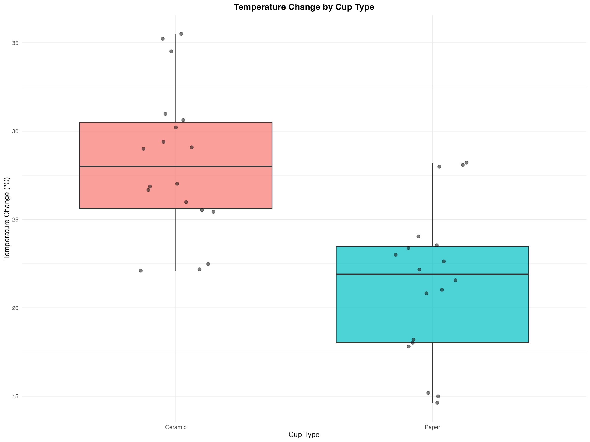

R · regression · ANOVA
Which cup keeps hot water hot?
A balanced 2×2×3 experiment, 36 trials, modelled with regression and ANOVA in R. The drink is scored five minutes after pouring.

-
Frame
Choose the cup, the lid, and the fill if the drink should still be warm five minutes after it is poured.
-
Audit
The response is the change in °C from the reading at pour to the reading at five minutes. The factors were assigned, not observed: cup (ceramic or paper), lid (lid or none), and fill (100, 150, or 200 mL), with three replicates of each combination. That is 18 ceramic and 18 paper, 18 with a lid and 18 without, and 12 cups at each volume. One row is one trial.
-
Baseline
The reference cell is a ceramic cup with a lid, filled to 100 mL. Every coefficient is a difference from that cell over the same five minutes. Stepwise AIC kept the factorial model. R² = 0.998. The fit is that high because the experiment has a few assigned factors and little left over as noise. It is a description of these 36 trials, and a weak reason to trust the equation on a new cup in a café.
-
Claim
Holding the other factors at the reference: paper loses about 8°C less than ceramic, taking the lid off costs about 4.5°C, and 200 mL loses about 8.3°C less than 100 mL. The interaction plot looks nearly parallel, which reads as a weak interaction, and the ANOVA still marks the two-way and three-way terms significant. Both can be true here. With a designed experiment and R² this high, a small bend is detectable. The lines do not cross, so the order of the main effects stays put.
-
Recommendation
For the warmest drink after five minutes, use a paper cup, a lid, and a fuller cup. The paper-over-ceramic gap is the result to challenge. A cold ceramic wall takes heat from the water at the start. The next trial is the same comparison after the ceramic cup is preheated. If paper no longer wins, the 8°C was the cold cup.